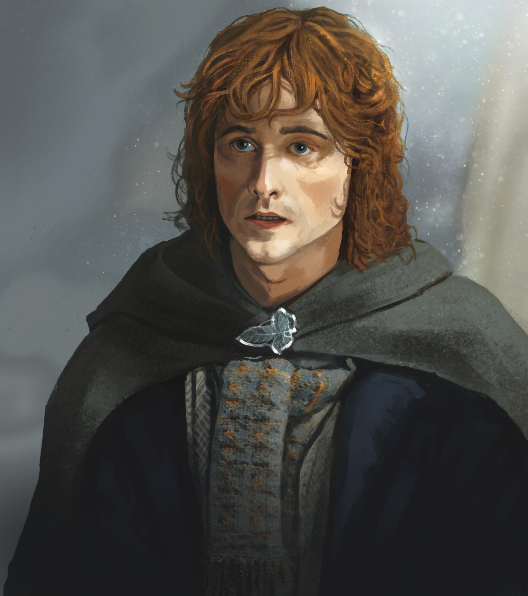

Kim jest?
Peregrin Tuk, nazywany Pippinem, to najmłodszy członek Drużyny Pierścienia i jeden z najbliższych przyjaciół Froda Bagginsa. Pochodzi z wpływowego rodu Tuków, znanego z hobbickich tradycji przygody i niepokorności. W opowieści J.R.R. Tolkiena Władca Pierścieni Pippin na początku jawi się jako lekkomyślny i nieco niezdarny, lecz z czasem pokazuje, że nawet najbardziej beztroskie serca mogą wykazać się odwagą i poświęceniem. Pippin, choć często wpadał w kłopoty – jak podczas przygody z entami czy spojrzenia w palantír Sarumana – stał się ważnym członkiem Drużyny. Jego młodzieńcza ciekawość i impulsywność były niekiedy źródłem problemów, ale także przyczyną niespodziewanych zwrotów akcji, które przyczyniły się do sukcesu misji. Jednym z najbardziej pamiętnych momentów w jego historii była służba u króla Gondoru, Denethora II. Pippin złożył przysięgę lojalności królowi, by odpłacić za życie Boromira, który zginął, ratując jego i Merry'ego. W Minas Tirith Pippin wykazał się odwagą i oddaniem, pomagając uratować Faramira przed desperackim czynem Denethora. Był także świadkiem epickiej Bitwy na Polach Pelennoru, gdzie ujrzał prawdziwe oblicze wojny. Pippin odegrał również kluczową rolę w obronie Shire podczas "Czyszczenia Shire". Po powrocie do domu, wspólnie z Merry'm, pomógł wyzwolić hobbitów spod rządów Sarumana, stając się jednym z bohaterów swojej społeczności. Dzięki swoim przeżyciom i doświadczeniom Pippin dorósł i z czasem objął rolę Thaina, lidera rodu Tuków i jednego z najważniejszych hobbitów w Shire.